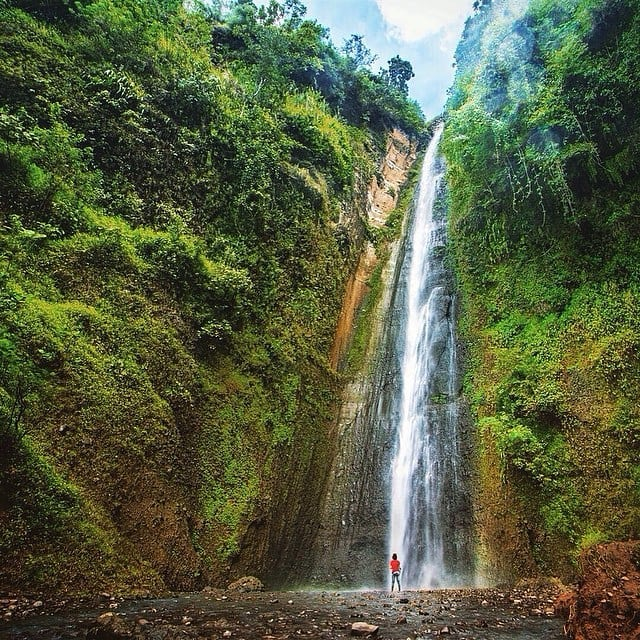

Kali Biru
March 28, 2021Views : 3,487,497
Berwisata ke Jogja tidak akan lengkap jika tidak menyambangi wisata alamnya yang mempesona. Satu yang tidak boleh dilewatkan dari Jogja adalah wisata Kalibiru. Objek wisata ini berada di Kulonprogo.
Tempat wisata ini dikembangkan menjadi kawasan wisata, yang dikelola oleh pemerintah serta masyarakat setempat. Dulunya, area ini merupakan kawasan hutan negara yang subur. Namun, pembalakan hutan
telah merusak tempat ini, sehingga pemerintah ikut turun tangan meremajakannya.
Watch This

Waduk Sermo
March 28, 2021Views : 3,487,497
Kalau kalian berwisata ke Yogyakarta jangan lewatkan untuk berwisata ke Waduk Sermo, salah satu Waduk yang berada di Kulonprogo yang begitu menawan.
Waduk ini merupakan salah satu potensi wisata dan edukasi di Kulonprogo, Yogyakarta. Apalagi bukit-bukit yang mengelilingi Waduk Sermo menjadikan pemandangan semakin indah.
Watch This

Puncak Suroloyo
March 28, 2021Views : 3,487,497
Selain dikenal dengan wisata sejarah,Daerah Istimewa Yogyakartajuga memiliki beberapa tempat wisata yang berada di wilayah dataran tinggi.
Selain di Mangunan, Gunung Api Purba dan lereng Gunung Merapi, ada sebuah tempat wisata dataran tinggi bernama Puncak Suroloyo.
Watch This

Pantai Glagah
March 28, 2021Views : 3,487,497
Keindahan alam ujung barat Kota Yogyakarta memang tak ada duanya. Bagaimana tidak? Di sana terdapat sebuah pantai dengan pemandangan indah dan instagramable
.Pantai Glagah namanya. Cukup dengan membayar retribusi sebesar Rp 5.000 untuk roda dua dan Rp 15.000 untuk roda empat traveler sudah bisa menikmati panorama super
indah yang mampu menyihir siapapun yang berkunjung untuk berwisata atau hanya sekedar diam sejenak menikmatinya
Watch This

Embung Banjaroya
March 28, 2021Views : 3,487,497
Proses pembangunan embung yang berada di Desa Banjaroyo, Dusun Tonogoro, Kecamatan Kalibawang, Kabupaten Kulonprogo ini dimulai tahun 2013 dan selesai sekitar awal 2014.
Semua berjalan lancar dan hasilnya memang sesuai dengan yang diharapkan. Setiap elemen pendukungnya tampak memberikan progress, baik dari pembangunan
Watch This

Curug Sidoharjo
March 28, 2021Views : 3,487,497
Air Terjun Perawan atau yang lebih dikenal dengan nama Air Terjun Sidoharjo oleh masyarakat sekitar merupakan air terjun tertinggi di Yogyakarta ini.
Air terjun yang terletak 30 km di sebelah barat Kota Yogyakarta ini memiliki ketinggian kurang lebih 30 m.
Akses jalan menuju air terjun yang terletak di Dusun Madigondo, Kalurahan Sidoharjo, Kapanewon Samigaluh, Kabupaten Kulon Progo ini bisa dilewat
Watch This